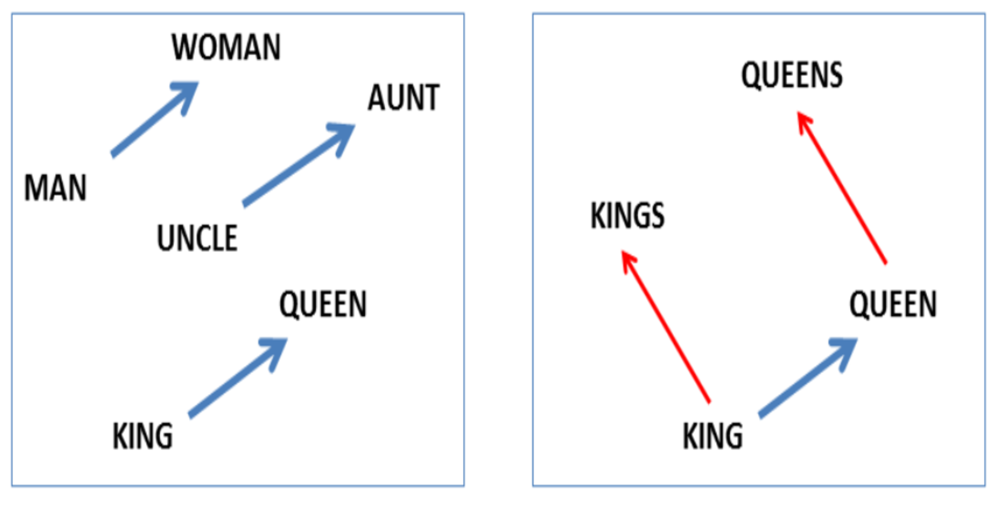
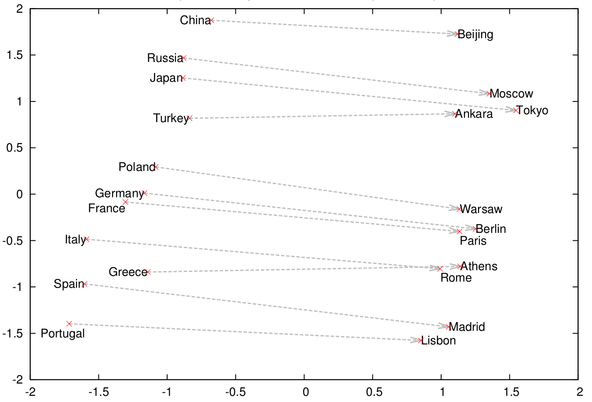
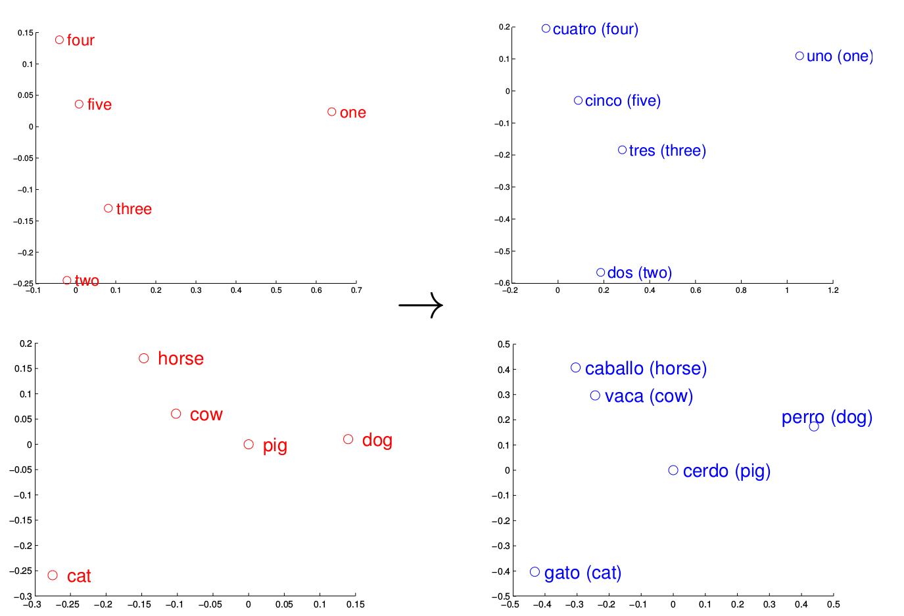
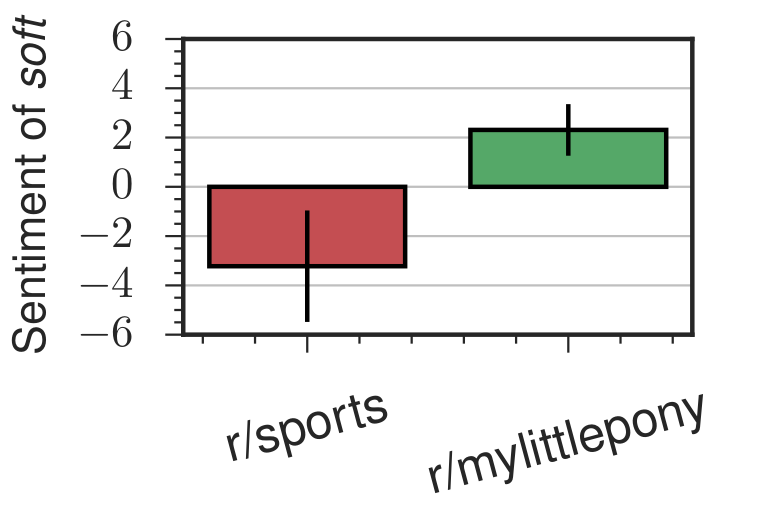
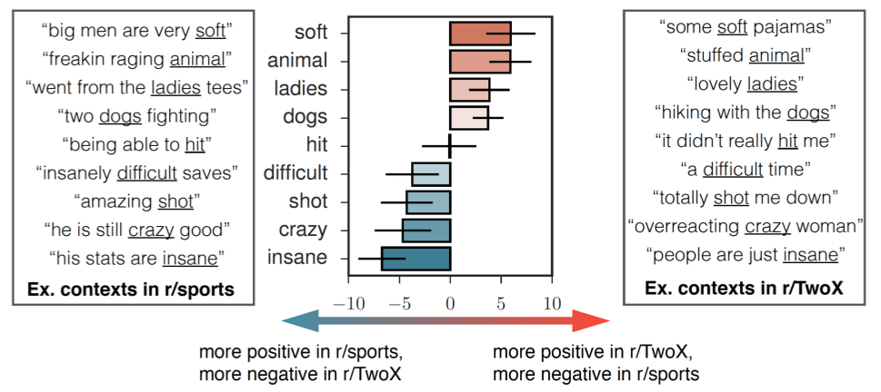
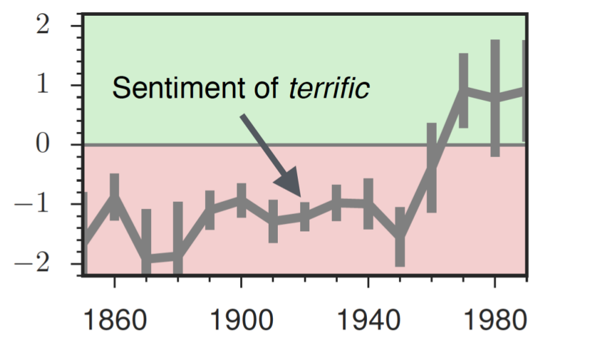
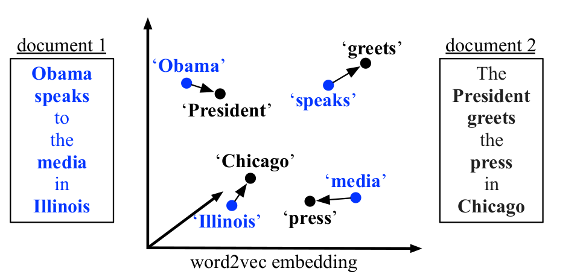

An Introduction to Word Embeddings (Part 1)
Human language is unreasonably effective at describing how we relate to the world. With a few, short words, we can convey many ideas and actions with little ambiguity. Well, mostly.
But because we’re capable of seeing and describing so much complexity, a lot of structure is implicitly encoded into our language. It is no easy task for a computer (or a human, for that matter) to learn natural language, for it entails understanding how we humans observe the world, if not understanding how to observe the world.
For the most part, computers can’t understand natural language. Our programs are still line-by-line instructions telling a computer what to do. And forget even that, if some blasted semicolon’s gone missing.
There’s good news though. There’s been some important breakthroughs in natural language processing (NLP), the domain where researchers try to teach computers human language.
Famously, in 2013, Google researchers found a method that enabled a computer to learn relations between words such as:1 \[\textrm{king} - \textrm{man} + \textrm{woman} \approx \textrm{queen}.\] This method, called word embeddings, has a lot of promise; it might even be able to reveal hidden structure in the world we see. Consider one relation it discovered: \[\textrm{president} - \textrm{power} \approx \textrm{prime minister}.\] Admittedly, this might be one of those specious relations.
Joking aside, it’s worth studying word embeddings for at least two reasons. First, there is a lot of applications and avenues for research made possible by word embeddings. Maybe we can take advantage of their capabilities if we understand what they are and what they can do. And second, we can learn from the way researchers approached the problem, seeing their thought processes as they met and overcame design challenges.
Let’s take a look at the first reason now! We’ll go into the theory in the next article.
Uses of Word Embeddings
There’s no obvious useful way to compare two words unless we already know what they mean. The goal of word-embedding algorithms is therefore to embed words into a space that comes with its own intrinsic measures of similarity.
In practice, words are embedded into a real vector space, which comes with notions of distance and angle.2 We hope that these notions extend to the embedded words in meaningful ways, quantifying relations or similarity between different words. And empirically, they actually do!
For example, the Google algorithm I mentioned above discovered certain nouns are singular/plural or have gender (Mikolov 2013abc):

They also found a country–capital relationship:

And as further evidence that meaning comes from the relationships a word forms, they actually found that the learned structure for one language often correlated to that of another language, perhaps suggesting the possibility for machine translation through word embeddings (Mikolov 2013c).

They released their C code as the word2vec package, and soon after, others adapted the algorithm for more programming languages. Notably, for gensim (Python) and deeplearning4j (Java).
Today, many companies and data scientists have found different ways to incorporate word2vec into their businesses and research. Spotify uses it to help provide music recommendation. Stitch Fix uses it to recommend clothing. Google is thought to use word2vec in RankBrain as part of their search algorithm.
Other researchers are using word2vec for sentiment analysis, which attempts to identify the emotions words convey. For example, one Stanford research group looked at how the same words in different Reddit communities take on different connotations.


They can even apply the same method over time, following how the word terrific, which meant horrific for the majority of the 20th century, has come to mean great today.

As a light-hearted example, one research group used word2vec to help them determine whether a fact is surprising or not, so that they could automatically generate trivia facts.
The successes of word2vec have also helped spur on other forms of word embedding—WordRank, Stanford’s GloVe, and Facebook’s fastText, to name a few major ones. But not only do other algorithms seek to improve on word2vec, they also look at texts through different units: characters, subwords, words, phrases, sentences, documents, and even perhaps thought.3 As a result, they allows us to think about not just word similarity, but also sentence similarity and document similarity—like this paper did (Kusner 2015):

Word embeddings transform human language meaningfully into a form conducive to numerical analysis. In doing so, they allow computers to explore the wealth of knowledge encoded implicitly into our own ways of speaking. Although the lexical data we can now access may give way to remarkable insight, it is unremarkable that there should be so many applications. In fact, we’ve barely scratched the surface.
There’s great potential, though, for any individual programmer or scholar to use these tools and contribute new knowledge. Many areas of research and industry that could benefit from NLP have yet to be explored. Word embeddings and neural language models are powerful techniques. But perhaps the most powerful aspect of machine learning is its collaborative culture. Many, if not most, of the state-of-the-art methods are open-source, along with their accompanying research.4
So, it’s there, if we want to take advantage. Now, the main obstacle is just ourselves. And…maybe an expensive GPU.5
Mikolov 2013.↩
To connect back to the previous section, we can think of the dimension \(d\) as the number of features we use to encode each word.↩
A “thought vector” is a new concept to represent an idea, perhaps more general than a word. Here is a blog post on thought vectors on deeplearning4j, and here’s an research article on skip-thought vectors. Here’s a neat result from the latter article: out of a 500,000-sentences corpus, their algorithm could find semantically- and syntactically-near sentences. For example, “im sure youll have a glamorous evening, she said, giving an exaggerated wink” and “im really glad you came to the party tonight, he said, turning to her”.↩
In fact, not a single one the references I used is behind a paywall.↩
Although, you could consider cloud services like Amazon Web Services!↩